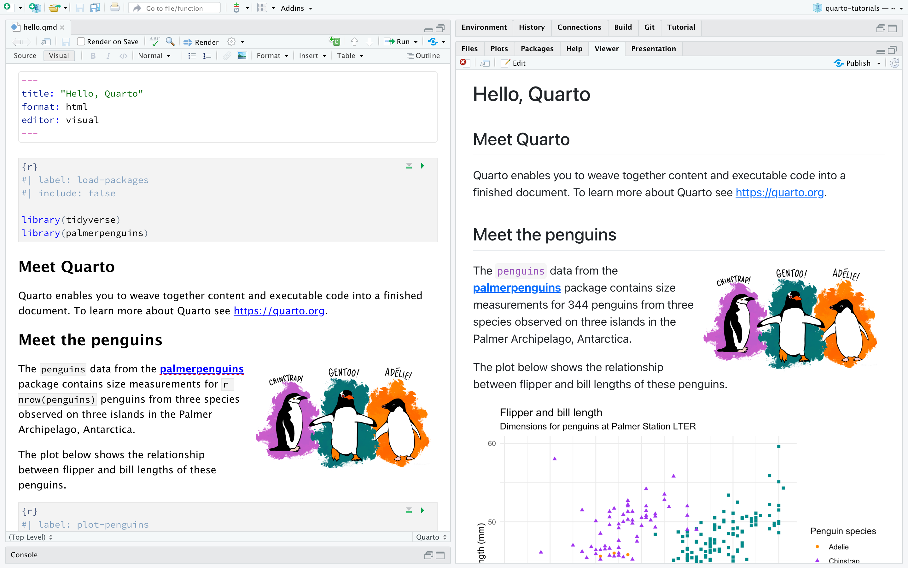

Introdução
Visão geral
Quarto é a próxima geração do RMarkdown do RStudio, e inclui dezenas de novos recursos e capacidades, ao mesmo tempo em que é capaz de renderizar a maioria dos arquivos .Rmd existentes sem modificações.
Você editará o código e o markdown no RStudio da mesma forma que faria com qualquer documento computacional (por exemplo, R Markdown), e visualizará o documento renderizado na aba Viewer enquanto você trabalha.
A extensão dos documentos Quarto é .qmd (à esquerda) junto com sua versão renderizada como HTML (à direita). Você também pode optar por renderizá-lo em outros formatos como PDF, MS Word, etc.

Este é o método básico para a publicação no Quarto - pegar um documento fonte e renderizá-lo em uma variedade de formatos de saída.
Siga os passos descritos abaixo.
Baixe e instale o último lançamento do RStudio (v2022.07):
Certifique-se de que você instalou os pacotes
tidyverseepalmerpenguins:install.packages("tidyverse") install.packages("palmerpenguins")Baixe o documento Quarto (
.qmd) abaixo, abra-o no RStudio, e clique em Render.
Renderizando
Use o botão Render no IDE RStudio para renderizar o arquivo e visualizar a saída com um único clique ou atalho de teclado (⇧⌘K).

Se você preferir renderizar automaticamente sempre que salvar, você pode verificar a opção Render em Salvar na barra de ferramentas do editor. A pré-visualização será exibida sempre que você renderizar novamente o documento. A pré-visualização lado a lado funciona tanto para saídas HTML como para PDF.

Observe que os documentos também podem ser resultados a partir do console R utilizando o pacote quarto*:
install.packages("quarto")
quarto::quarto_render("notebook.Rmd")Ao renderizar, o Quarto gera um novo arquivo que contém texto, código e resultados selecionados a partir do arquivo .qmd. O novo arquivo pode ser um HTML, PDF, MS Word document, apresentação, website, livro, documento interativo, ou outro formato.
Criando documentos
Na imagem abaixo podemos ver o mesmo documento nos dois modos do editor do RStudio: visual (à esquerda) e fonte (à direita). O editor visual do RStudio oferece uma experiência de autoria WYSIWYM por markdown. Para formatação você pode utilizar a barra de ferramentas, um atalho de teclado (⌘B), ou a construção de marcação para formato (** negrito**). O código fonte em texto puro subjacente ao documento é escrito por você e você pode visualizá-lo/editá-lo em qualquer ponto, mudando para o modo fonte para edição. Você pode alternar entre estes dois modos clicando em Source* e Visual* na barra de ferramentas do editor (ou usando o atalho de teclado ⌘⇧ F4).

A seguir, vamos voltar nossa atenção para o conteúdo de nosso documento Quarto. O arquivo contém três tipos de conteúdo: um cabeçalho YAML, pedaços de código e texto em markdown.
Cabeçalho YAML
É um cabeçalho (opcional) YAML demarcado por três traços (---) em ambas as extremidades.
Quando renderizado, o título, "Olá, Quarto", aparecerá no topo do documento com um tamanho de fonte maior do que o resto do documento. Os outros dois campos YAML denotam que a saída deve estar em formato “html” e o documento deve abrir no “editor” “visual”, por padrão.
A sintaxe básica da YAML utiliza pares de valores chave no formato “chave: valor”. Outros campos do YAML comumente encontrados em cabeçalhos de documentos incluem metadados como “autor”, “subtítulo”, “data”, assim como opções de personalização como “tema”, “cor de botão”, “largura de figura”, etc. Você pode aprender sobre todos os campos YAML disponíveis para documentos HTML aqui. Os campos YAML disponíveis variam de acordo com o formato do documento, por exemplo, veja aqui para documentos em PDF e aqui para MS Word.
Chunks de código
Pedaços de código são identificados com {r} com opções (opcionais) em estilo YAML, identificados por #| no início da linha.
```{r}
#| label: load-packages
#| include: false
library(tidyverse)
library(palmerpenguins)
```Neste caso, o “rótulo” do trecho de código é “load-packages” e nós definimos “include” para “false” para indicar que não queremos o trecho em si ou nenhuma de suas saídas nos documentos apresentados.
Além de renderizar o documento completo para visualizar os resultados dos trechos de código, você também pode executar cada trecho de código interativamente no editor do RStudio, clicando no ícone  ou atalho de teclado (⇧⌘⏎). O RStudio executa o código e exibe os resultados em linha dentro de seu arquivo ou no Console, dependendo de sua preferência.
ou atalho de teclado (⇧⌘⏎). O RStudio executa o código e exibe os resultados em linha dentro de seu arquivo ou no Console, dependendo de sua preferência.

Texto markdown
Texto markdown possui formatação, incluindo cabeçalhos de seção, hyperlinks, uma imagem embutida e um trecho de código em linha.

O Quarto usa a sintaxe markdown para o texto. Se usar o editor visual, você não precisará aprender muita sintaxe de markdown para criar seu documento, pois você pode usar os menus e atalhos para adicionar um cabeçalho, texto em negrito, inserir uma tabela, etc. Se utilizar o editor do código fonte, você poderá formatar o texto com expressões marcadas como ##, ***negrito**, etc.
Como funciona
Quando você apresenta um documento da Quarto, primeiro o knitr executa todos os trechos de código e cria um novo documento markdown (.md) que inclui o código e sua saída. O arquivo de markdown gerado é então processado pelo pandoc, que cria o formato final. O botão Render encapsula estas ações e as executa na ordem correta para você.